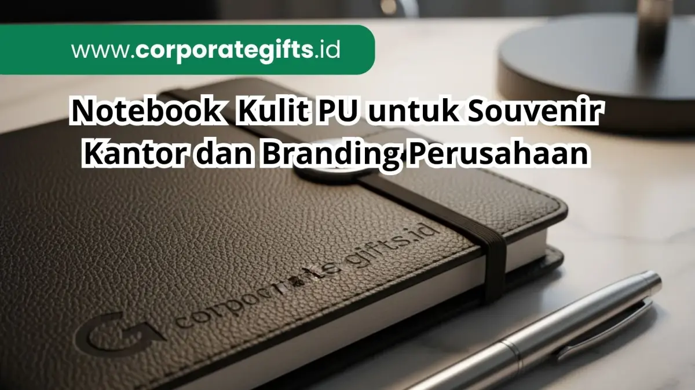

Corporate Gifts ID - Notebook kulit PU adalah souvenir kantor premium berbahan kulit sintetis (polyurethane leather) yang memadukan tampilan elegan, daya tahan tinggi, dan kemudahan kustomisasi logo instansi. Material ini menjadi pilihan favorit bagi berbagai perusahaan terkemuka sebagai media cinderamata formal untuk klien VIP, mitra bisnis strategis, maupun paket sambutan karyawan baru (notebook agenda kulit custom).
Dibandingkan dengan kulit asli (genuine leather) yang memerlukan alokasi biaya besar serta perawatan rumit, kulit PU menawarkan keseimbangan sempurna antara kemewahan visual dan efisiensi anggaran pengadaan massal korporasi.
Poin Kunci Keunggulan Notebook Kulit PU:
- Estetika Mewah & Lembut: Permukaan sintetis berkualitas tinggi meniru kelembutan dan serat kulit asli secara presisi.
- Daya Tahan Tinggi: Tahan terhadap kelembapan, tidak mudah retak, dan menjaga logo tercetak tetap tajam bertahun-tahun.
- Aplikasi Branding Variatif: Sangat fleksibel untuk teknik cetak deboss, emboss, hot stamping emas, maupun laser grafir.
- Efisiensi Anggaran: Menghasilkan nilai persepsi premium tinggi dengan biaya per unit yang sangat bersahabat.
Mengapa Perusahaan Memilih Notebook Kulit PU?
Dalam strategi komunikasi korporat modern, cinderamata kantor bukan hanya sekadar bingkisan seremonial, melainkan representasi dari reputasi perusahaan. Penggunaan material PU leather menghadirkan sejumlah nilai strategis:
- Tampilan Profesional dan Eksklusif: Membangun citra perusahaan yang mapan dan berorientasi pada detail kualitas.
- Paparan Brand Berkelanjutan (Continuous Exposure): Notebook digunakan dalam berbagai pertemuan bisnis dan rapat eksekutif, memberikan eksposur logo yang konsisten.
- Ramah Lingkungan dan Bebas Perawatan Hewan (Cruelty-Free): Solusi etis bagi perusahaan yang mengedepankan prinsip keberlanjutan (ESG) tanpa mengorbankan kualitas.
Keunggulan Notebook Kulit PU Dibanding Material Lain
Ketika dibandingkan dengan media sampul lain seperti karton hardcover, kain kanvas, atau kayu laminasi, kulit PU memiliki keunggulan kompetitif yang nyata:
- Fleksibilitas Desain: Nyaman digenggam tangan dan pas diselipkan ke dalam tas laptop tanpa khawatir sudut sampul mudah terlipat.
- Hasil Cetak Deboss yang Dalam: Tekstur PU leather mampu mempertahankan lekukan deboss panas secara permanen tanpa merusak lapisan dalam buku.
- Kombinasi Fungsional: Mudah dilengkapi fitur pendukung seperti tempat pulpen (pen loop), tali elastis pengunci, pita pembatas buku, serta kantong selipan kartu nama.
Teknik Customisasi Logo pada Sampul Kulit PU
Terdapat beberapa metode branding yang lazim digunakan untuk menyematkan identitas visual perusahaan pada sampul kulit PU:
1. Teknik Deboss & Emboss Elegan
Teknik penekanan pelat logam panas (blind deboss) menghasilkan efek cekung yang elegan dan tidak mencolok (subtle). Menjadi standar utama bagi institusi keuangan, perbankan, dan konsultan hukum.

Presisi jahitan tepi dan hasil cetak deboss logo yang menambah kesan mewah pada notebook kulit PU.
2. Hot Stamping Gold atau Silver Foil
Menggunakan lapisan foil emas atau perak yang direkatkan melalui panas. Memberikan pantulan kilau mewah yang sangat cocok untuk souvenir peringatan ulang tahun perusahaan (anniversary souvenir).
3. Laser Grafir Nama Individual
Sinar laser mengikis permukaan mikro kulit PU untuk memunculkan nama personal penerima. Sangat ideal untuk kado eksekutif direksi dan narasumber kehormatan.
4. Print UV Full Color
Teknologi cetak tinta digital langsung ke permukaan kulit PU. Cocok untuk perusahaan startup dan agensi kreatif yang memiliki logo warna-warni bergradasi.
Varian Produk Notebook Kulit PU Paling Banyak Diminati
Beragam model notebook kulit PU dapat disesuaikan dengan kebutuhan event dan profil penerima:
- Agenda Bisnis Binder Refill: Menggunakan ring mekanik yang memungkinkan penggantian kertas berkala, sangat awet digunakan bertahun-tahun.
- Executive Gift Set Bundling: Paket notebook PU yang dikombinasikan bersama pulpen metal berlogo dan tumbler vakum stainless dalam kotak rigid mewah.
- Planner Tahunan dengan Slot Kartu: Dilengkapi kantong multifungsi di bagian dalam cover untuk menyimpan kartu nama, paspor, atau ponsel tipis.
Tabel Komparasi Jenis Notebook Kantor
Berikut perbandingan karakteristik aneka material sampul buku catatan korporat:
| Material Sampul | Kesan Estetika | Daya Tahan | Teknik Branding Terbaik | Estimasi Harga |
|---|---|---|---|---|
| Kulit Sintetis PU | Elegan, Formal, Mewah | Sangat Tinggi (Tahan Air) | Deboss Panas, Foil Emas, Grafir Laser | Rp35.000 - Rp75.000 |
| Hardcover Karton Art Paper | Modern, Colorful | Sedang (Rentan Lembap) | Cetak Offset Laminasi Doff/Glossy | Rp20.000 - Rp40.000 |
| Kain Kanvas / Linen | Artistik, Ramah Lingkungan | Tinggi (Kuat Terhadap Tarikan) | Sablon Presisi, Bordir, Patch Kulit | Rp30.000 - Rp55.000 |
| Kulit Asli (Genuine Leather) | Ultra Mewah, Prestisius | Sangat Tinggi (Butuh Perawatan) | Embossing Panas, Laser Engraving | Rp150.000 - Rp350.000 |
Manfaat Branding Jangka Panjang bagi Korporasi
Mengalokasikan anggaran untuk notebook kulit PU berkualitas memberikan imbal hasil promosi (ROI) yang tinggi. Buku catatan fungsional memiliki siklus pakai 12 hingga 24 bulan, memastikan identitas brand Anda selalu berada di baris terdepan meja kerja pengambil keputusan.
Kesimpulan dan Rekomendasi Vendor
Notebook kulit PU merupakan perpaduan sempurna antara prestise, fungsi kerja, dan efisiensi pengadaan. Dengan memilih teknik deboss atau laser grafir yang tepat, perusahaan Anda dapat menyajikan cinderamata yang membanggakan.
Jelajahi berbagai pilihan model dan warna kulit sintetis di CorporateGifts.ID. Hubungi tim spesialis kami untuk mendapatkan sampel mockup digital serta penawaran harga grosir melalui formulir permintaan penawaran harga resmi.